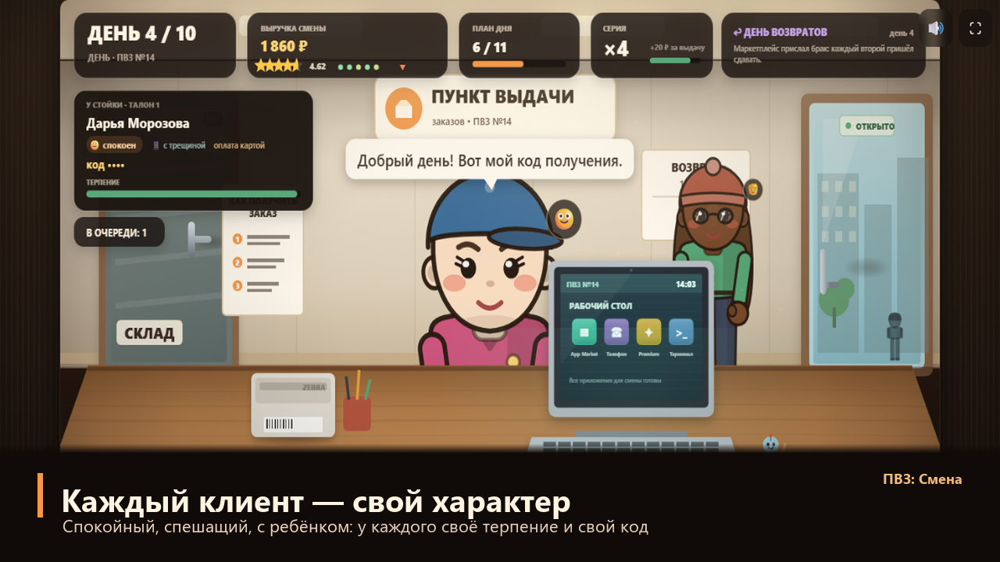
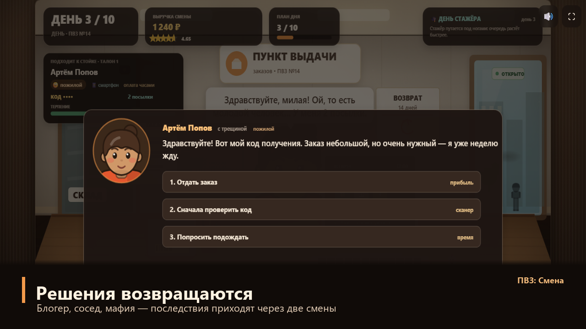
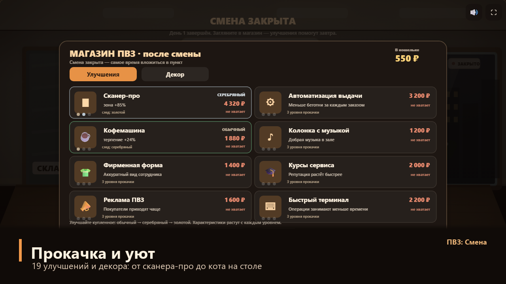
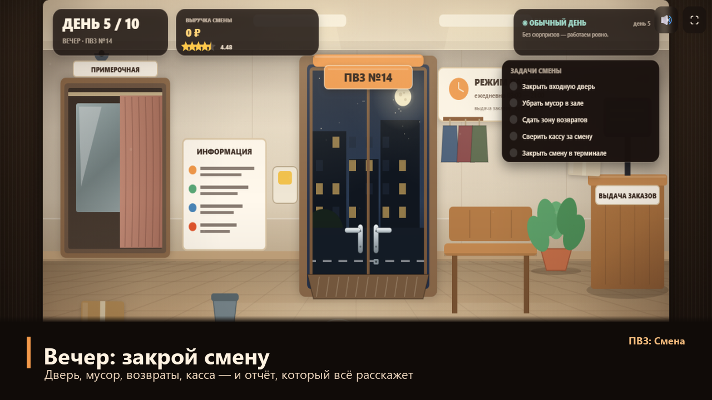
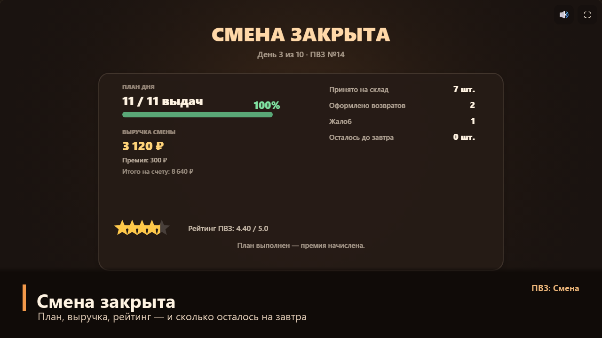

📦
Полная смена
Утро: свет, терминал, поставка и дверь. День: код, ячейка, посылка на стол, сканер, вскрытие коробки. Вечер: мусор, возвраты, касса и отчёт.
Симулятор пункта выдачи: утренняя поставка, очередь у стойки, живые покупатели с личными историями и выбором ответов, примерка и показ покупки, особые гости на каждой смене, рекомендации знакомых, мессенджер на ноутбуке и вечерний оброк мафии, которой вы задолжали.
Тёплая рисованная игра на Canvas 2D. Один HTML-файл, никаких установок и интернета.
Бесплатно · Windows 10/11 · Android 8.0+ · сохранение в браузере

Об игре
Вы приняли пункт выдачи. Впереди десять смен, долг мафии и очень разные покупатели. Каждое решение стоит времени, денег или репутации — а последствия возвращаются через две смены в утренних новостях.
Утро: свет, терминал, поставка и дверь. День: код, ячейка, посылка на стол, сканер, вскрытие коробки. Вечер: мусор, возвраты, касса и отчёт.
В зале у стены копится стопка коробок, за которыми никто не приходит. Они тикают, мяукают, храпят и пахнут рыбой. Осмотреть, вскрыть, позвонить по накладной или сдать в полицию — решать вам.
Клиент примеряет футболку и показывает, как сидит, слушает наушники и танцует, читает первую страницу книги, выпускает кота из переноски. 23 микросценки с выбором реакции — выдача больше не пролетает одинаково.
На второй смене приходит Витя Гром: кричит, распугивает очередь и ломает товар, пока его не успокоят. Дальше — блогерша, проверяющая, «двойник» с тем же кодом, курьер-новичок, коллекционер и мама с тройней.
У каждого покупателя своё лицо, работа и маленькая история на три визита. Поговорите по-человечески — он оставит номер и расскажет о ПВЗ знакомым: по рекомендации придут новые люди.
Три сюжетных знакомых приходят почти каждый день, а между визитами пишут в мессенджер. Выбирайте ответы — переписка меняет деньги, рейтинг и сюжет мафии.
Три уровня каждого: обычный, серебряный, золотой. Сканер-про, кофемашина, автоматизация выдачи, декор и кот на столе.
Долг, доверие, грязь и улики. Отдать как просили, взять отсрочку, отработать услугой или намекнуть на полицию — пять разных финалов.
На пятой смене странный тип ставит на ноутбук Banana store. Быстрые деньги, падение рейтинга и рост подозрения полиции — вплоть до ареста.
15 событий дня, 7 радиостанций с синтезированной музыкой, 16 пасхалок, кот, кружка и Konami-код. Награда за любопытство.
Скриншоты




Скачать
Игра бесплатная и работает без интернета. На Android и Windows — отдельные сборки, в браузере запускается сразу.
Портативный архив: распакуйте в любую папку и запустите «Запустить ПВЗ.vbs». Игра откроется в отдельном окне.
Ландшафтный полноэкранный режим и крупный интерфейс. Установите APK и разрешите установку из неизвестного источника.
Ничего скачивать не нужно: игра запускается на ПК, планшете и телефоне. Прогресс хранится в этом браузере.
Ещё есть один автономный HTML-файл — положите на флешку и открывайте в любом браузере. Все версии и изменения — в релизах.
Как играть
Включите свет в зале, подойдите к терминалу и нажмите «Открыть смену». Примите поставку на складе и откройте входную дверь.
Отсканируйте код с телефона покупателя, возьмите посылку в ячейке, положите на стол и отсканируйте штрихкод. Вскройте коробку ножом, разрежьте пакет ножницами — и отдайте товар.
Закройте дверь, уберите мусор, сдайте возвраты, сверьте кассу и закройте смену. После отчёта придёт мафия.
| Действие | Клавиатура | Мышь / тап |
|---|---|---|
| Склад ↔ стойка | ← | дверь слева |
| Зал | → | дверь справа |
| Терминал | T | ноутбук → Терминал |
| Ноутбук | L | ноутбук на столе |
| Посылка на стол / сканер / вскрыть | Enter / Пробел | место под посылку слева |
| Резать скотч и пакет | держать Пробел | вести ножом / ножницами |
| Выбор в диалоге | 1–6 | вариант справа внизу |
| Пауза | Esc | — |
Вопросы
Нет. Игра не делает ни одного сетевого запроса: вся графика рисуется на canvas, музыка синтезируется в WebAudio, сохранение лежит в localStorage. Интернет нужен только чтобы скачать сборку.
В локальном хранилище браузера или WebView. Это значит, что прогресс привязан к браузеру и профилю: очистка данных сайта или перенос игры в другую папку может начать заново. Для APK сохранение живёт вместе с приложением.
Пока нет. Premium store работает в демо-режиме: все цены видны, но деньги не списываются, а покупка честно помечена как демо-оплата. Для настоящих платежей нужны ИП или ООО, УКЭП и расчётный счёт, а в код — RuStore Pay SDK. Всё описано в RELEASE-RUSTORE.md.
Скачайте файл на телефон, откройте его и разрешите установку из этого источника (Android спросит один раз). Игра не требует доступа в интернет и не запрашивает лишних разрешений.
Да. Исходники открыты на GitHub, сборки лежат в релизах. Код и графика — собственная работа автора; отсылки к персонажам игр, фильмов и сериалов — пародийные пасхалки и принадлежат правообладателям.
Скачайте игру или откройте браузерную версию. Долг мафии — 9 350 ₽, рейтинг — 4,65, и всё это только ваше.